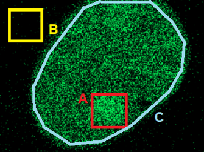
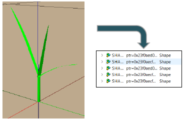
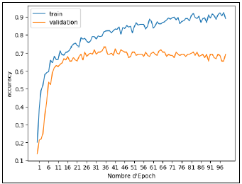

Website Presentation
This website contains and summarizes every project that I worked on during my studies (« Projects » tab).
You can download my Resume on the « Resume » tab in the navigation bar, and also learn more about me by clicking on the « About Me » tab.
This portfolio also contains an annual personal review that I usually write each year during my studies. It consists of a summary where I think about what I have learned during the year, and my plans for the future (« Personal-Review » tab).
Welcome and enjoy the read !
On the right are projects that I recently did, you can learn more about them by clicking on the pictures.
Recent Projects
-

Simulating DNA Repair
Recreating how the PARP1 proteins gather in damaged DNA area, using both stochastic and deterministic mathematical methods

M1 Internship
Building new features for a tool that visualizes and compares bacterial genome regions
-

BUT3 Internship
Statistical analysis of plant growth simulations under "typical meteorological year" conditions

Introduction to Neural Networks
Creation of an image classification system using various training methods